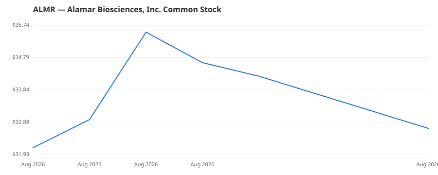

bullish · bearish · n/a — dots: price>SMA10 · SMA10>SMA50 · SMA50>SMA200 · up>down volume (20d)
Technology Hardware · mid cap

Alamar Biosciences Inc is a proteomics company engaged in protein detection and analysis. The company has developed its own NULISA (NUcleic Acid Linked Immuno-Sandwich Assay) technology as the foundation of its Precision Proteomics platform enabling the detection and quantification of protein biomarkers in a single sample with ultra-high sensitivity and high specificity, even from very small volumes of biofluid. The company operates in single segment and focuses on developing a good sensitive proteomic liquid biopsy platform and sells instruments, consumables, and services based on this platfo LABORATORY ANALYTICAL INSTRUMENTS · website
🛒 Newly buying: Samsara BioCapital, LLC (+22%, 5.5% of book)
| Fund | Fund alpha vs SPY | Position | % of book |
|---|---|---|---|
| Samsara BioCapital, LLC | +22% | $67M | 5.5% |
Hedge data: SEC EDGAR 13F · ranked funds beat SPY in >50% of their quarters · fund alpha = mirror-portfolio return minus SPY.